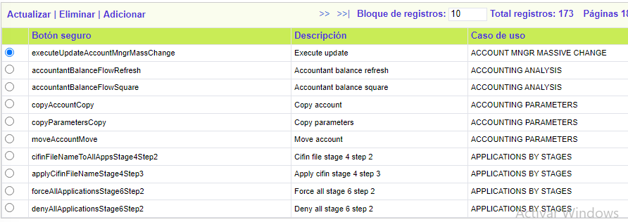
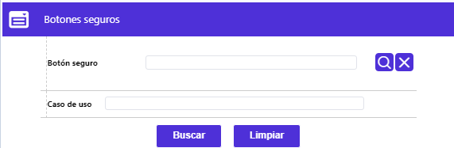
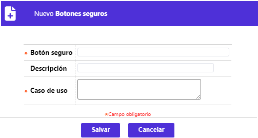
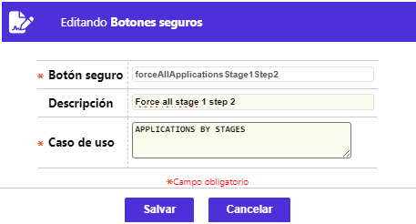

Botones seguros
Mediante esta opción se permite la consulta y mantenimiento de la tabla en la que se registran los botones especiales contenidos dentro de algunos formularios del sistema. A estos botones se les puede restringir el acceso a un rol en particular desde la opción Roles y restricción. Además de contar con un filtro de búsqueda, el formulario dispone de los enlaces: Actualizar, Eliminar y Adicionar.

El formulario cuenta con esa funcionalidad de búsqueda, necesaria para la consulta de la información:

|
Botón seguro |
Campo que posee lista de valores adjunta de la que se puede seleccionar o buscar, el botón seguro que se quiere consultar. |
|
Caso de uso |
Campo que permite ingresar hasta 100 caracteres alfanuméricos, en el que se digita total o parcialmente, el caso de uso para el que se requiere consultar, permite realizar la búsqueda utilizando el símbolo %. |
Adicionar: Al activar ese enlace se despliega un formulario con los siguientes campos:

|
Botón seguro |
En este campo de 40 caracteres, obligatorio, se debe ingresar el nombre exacto del botón seguro, tal como se encuentra definido en el código de la JSP. |
|
Descripción |
En este campo de 30 caracteres, no obligatorio, se puede ingresar una breve descripción de la funcionalidad del botón grabado. |
|
Caso de uso |
Campo alfanumérico de 100 caracteres, obligatorio, en el cual se debe ingresar el caso de uso al cual pertenece el botón adicionado o actualizado. |
Actualizar: Al activar ese enlace se despliega un formulario en el cual los únicos campos modificables son: Descripción y Caso de uso.
